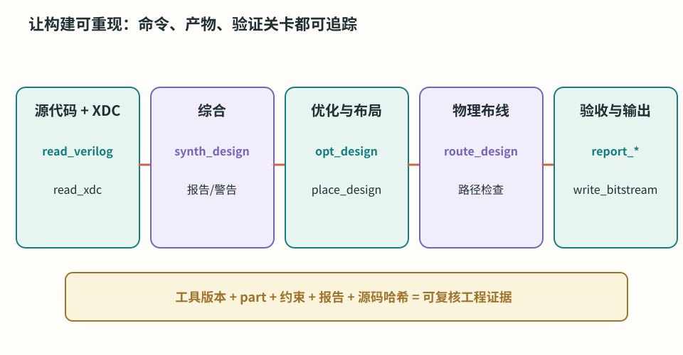
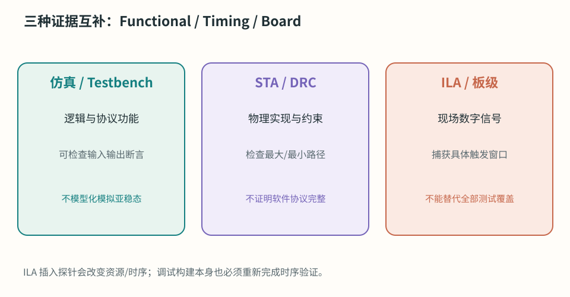

Vivado 实战：从可复现 Tcl 到板级证据
固定源代码、器件、XDC、报告和脚本；构建工程，而不是只点击“生成比特流”按钮。
01 / 怎样从 RTL 形成可审查、可重现的 FPGA 构建？
“我在 IDE 里点了 Run Implementation，生成了 .bit”不是可重现的工程流程。要回答别人如何得到相同结果，就必须固化顶层源文件、目标器件 part、管脚和时钟约束、工具版本、构建命令、报告和构建提交。
Vivado 支持图形 Project Mode，也支持 Tcl 驱动的 Non-Project Mode。两者都可以用于真实项目；本章采用源码 + XDC + Tcl 脚本的方式，让版本控制和自动构建更直接，并保留在 IDE 中打开 checkpoint 调试的可能性。

工具脚本只有在机器实际安装可用 Vivado、许可证支持目标 part，并提供有效板卡约束后才能运行。GitHub 的普通 Ubuntu CI 目前只跑开源 RTL 仿真与静态检查，不能据此声称已生成实际 FPGA bitstream。
02 / 一个明确目标器件的基础工程
课程示例 examples/vivado/blink_top.v 只有三根顶层信号：clk、rst_n、led。在 100 MHz 输入时钟前提下，计数器每 50,000,000 次上升沿切换一次 LED 输出，完整周期为 1 秒（1 Hz）。该 RTL 自身不指定板卡引脚、电平和按钮极性。
module blink_top (
input wire clk,
input wire rst_n,
output reg led
);
reg [25:0] count;
always @(posedge clk) begin
if (!rst_n) begin count<=0; led<=0; end
else if (count==26'd49999999) begin
count<=0; led<=~led;
end else count<=count+1'b1;
end
endmodule请从自己的开发板手册获取真实 FPGA part 与 pin map，将 clk/rst_n/led 映射到对应管脚，并指定 IOSTANDARD。时钟的 create_clock -period 必须与外部输入时钟相符。未完成这些条件时，write_bitstream 可能由 DRC 阻止，这是应该正视的失败，而不是用关闭 DRC 的方式绕过。
03 / Tcl 非工程模式：检查点与每阶段报告
# 系统须设置环境变量 FPGA_PART 和 BOARD_XDC
# 例：export FPGA_PART=xc7a35tcpg236-1
# export BOARD_XDC=/absolute/path/to/real_board.xdc
vivado -mode batch -source examples/vivado/build.tcl构建脚本的主要逻辑：
read_verilog examples/vivado/blink_top.v
read_xdc $board_xdc
synth_design -top blink_top -part $part
report_utilization -file build/vivado/utilization.rpt
opt_design
place_design
route_design
report_timing_summary -file build/vivado/timing.rpt
report_drc -file build/vivado/drc.rpt
write_checkpoint -force build/vivado/routed.dcp
write_bitstream -force build/vivado/blink_top.bit以上为脚本逻辑摘要。完整版会检查环境变量、XDC 文件是否存在、输出目录并设置构建失败即时停止；若无法完成布局布线、DRC 或时序检查，应保留日志供分析。write_bitstream 能成功并不自动意味着所有时序要求都满足，必须检查报告中的具体状态。AMD UG892 提供同类非工程模式命令。查看官方命令表。
04 / 什么时候可以把工程称为“验收通过”？
把检查切成三个层次：功能仿真是否覆盖目标行为；物理实现是否满足时序和 DRC；板卡是否完成外设、电气和系统级测试。对于每一次批量构建，至少要保存设计 top、part、Vivado 版本、提交 SHA、主要警告、利用率和 timing summary，并记录测试条件。

| 阶段 | 检查对象 | 未覆盖的风险 |
|---|---|---|
| RTL 自检 | 指定输入激励下的结果 | 物理时序与亚稳态 |
| Synthesis/DRC | 资源映射、未驱动、IO 规则 | 路由后所有实际路径 |
| Route + STA | 最小/最大路径与约束 | 测试覆盖、异步协议误用 |
| Hardware Manager/ILA | 实际运行时数字波形 | 未触发的边界场景 |
ILA 需要合适的探针、采样时钟和触发条件；加上 ILA 也会改变资源与布线，应对最终包含 ILA 的构建重新运行 STA。在板上抓到一帧正确波形并不等于证明随机抖动或所有 CDC 都安全。
05 / 2026 年许可模型：依据 AMD 当前官方说明
AMD 公布自 Vivado 2026.1 开始采用 BASIC、CORE、PRO、ENTERPRISE 和 GOLD 新层级。BASIC 仍是免费层级，官方表格显示 Windows 与 Linux 均在其操作系统支持范围内，但设备和高级功能覆盖按层级、发行版本而变，需要年度续订。AMD Vivado Licensing Options。
因此原版将“2026.1 Linux 上免费 Vivado 被取消”作为确定事实是不正确的。也不要在教程里承诺某个 FPGA part 永久受 BASIC 支持；使用前应核对当前官方器件矩阵和许可证功能表。
与购买许可证无关的开源验证流程仍可用 Icarus Verilog 对可移植 RTL 进行功能回归；但 Icarus 不能替代 Vivado 为 AMD 器件进行布局布线和生成配置文件。
06 / 一次实战验收：准备证据，而不是伪造运行结果
先本地执行 bash scripts/run_rtl_tests.sh 验证可移植模块，再准备与开发板匹配的 XDC，打开 Vivado 运行本章批量构建脚本。读完 build/vivado/timing.rpt 和 build/vivado/drc.rpt 之后，再决定是否下载板卡。
如果暂时没有 AMD FPGA 或 Vivado，本仓库仍可运行 python3 scripts/check_vivado_example.py 对 Tcl 示例和 XDC 模板进行静态检查；它不执行任何工具构建，也不虚构 FPGA 的 LUT/FF 数量或 Fmax。
练习：为什么不能直接把示例中的 xc7a35tcpg236-1 当作任何 Artix-7 开发板的目标 part？
封装、速度等级、I/O 引脚、供电银行、时钟源和板卡外设由具体板型决定。必须查完整 part 编号和引脚映射，再提供与之匹配的 XDC。